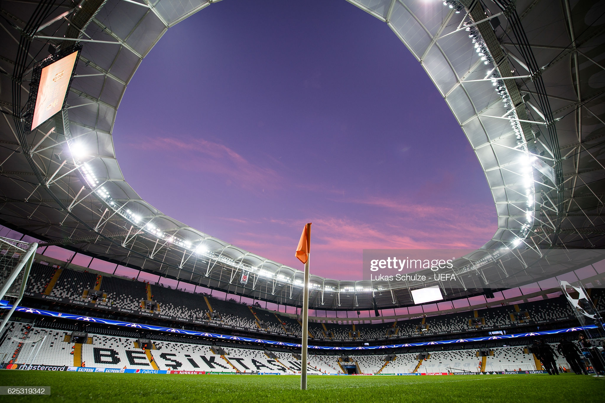

Merhaba. Benim Adım Hüseyin.
Sakarya Üniversitesi
, Bilgisayar Mühendisliği 1.sınıfta okuyorum. Uzaktan...
|
Futbol oynamayı ve izlemeyi çok severim. Özellikle
BeşiktAŞK'ı izlemek ve yaşamak bambaşka bir olay benim için.
Bana sorsanız Beşiktaş'ın tüm kadrosunu sayarım.
|
 |
En sevdiğim aktivitelerden biri de Bilgisayar ile uğraşmak. Sadece oyun değil her türlü iş için bilgisayarı kullanmak çok hoşuma gidiyor.
Bilgisayar Mühendisliği bölümünü seçmem sanırım bundan. Küçüklükten beri hep hayalini kurardım, 'bilgisayarımın olması nasıl bir his acaba' diye düşünürdüm.
Ve şuanda bilgisayarım var. Gerçekten çok güzel bir his. Hem oyun oynamak hem programlama derslerine çalışmak, kod yazmak; hem de film, video izlemek...
|